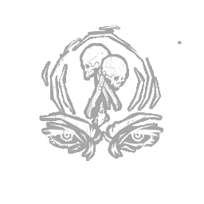

反制之力 Counterforce
所属：吉尔·瓦伦丁（逃生者）
| 等级 | 档位 1 | 档位 2 | 档位 3 |
|---|---|---|---|
| 数值 | 10 1 | 12 | 14 |
描述
"要对抗比自己更强大的敌人，首先得找出并击溃对方的支援。" 你获得以下永久效果：默认净化速度提升至125%。每当你净化时，触发图腾反制（Totem Counterforce），产生以下效果：净化速度提升可叠加的+25%；距离你当前位置最远的光环图腾向你显示10/12/14秒。 "我不介意做点侦探工作。" —— 吉尔·瓦伦丁

所属：吉尔·瓦伦丁（逃生者）
| 等级 | 档位 1 | 档位 2 | 档位 3 |
|---|---|---|---|
| 数值 | 10 1 | 12 | 14 |
"要对抗比自己更强大的敌人，首先得找出并击溃对方的支援。" 你获得以下永久效果：默认净化速度提升至125%。每当你净化时，触发图腾反制（Totem Counterforce），产生以下效果：净化速度提升可叠加的+25%；距离你当前位置最远的光环图腾向你显示10/12/14秒。 "我不介意做点侦探工作。" —— 吉尔·瓦伦丁